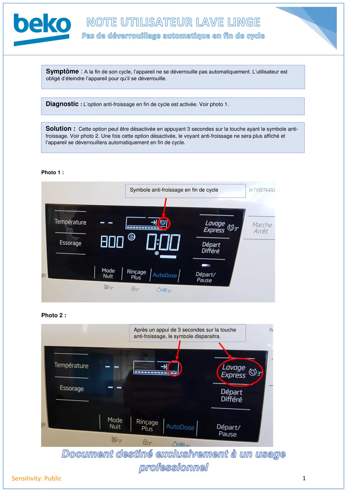

Pas de deverrouillage en fin de cycle app en défoulage

1Sensitivity: PublicPhoto 1 :Photo 2 :Symptôme : A la fin de son cycle, l’appareil ne se déverrouille pas automatiquement. L’utilisateur estobligé d’éteindre l’appareil pour qu’il se déverrouille.Diagnostic : L’option anti-froissage en fin de cycle est activée. Voir photo 1.Solution : Cette option peut être désactivée en appuyant 3 secondes sur la touche ayant le symbole anti-froissage. Voir photo 2. Une fois cette option désactivée, le voyant anti-froissage ne sera plus affiché etl’appareil se déverrouillera automatiquement en fin de cycle.Symbole anti-froissage en fin de cycleAprès un appui de 3 secondes sur la toucheanti-froissage, le symbole disparaitra.
1 / 1